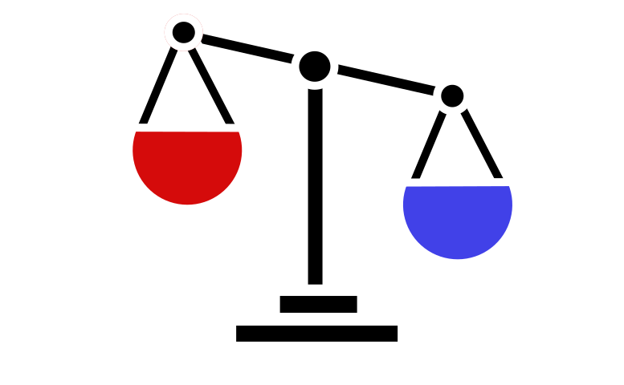

<app-popup [isActive]="isPopupActive">
  <ul class="mobileMenuList">
    <li *ngFor="let item of menuLinks">
      <a class="mobile-menu-link" routerLink="{{ item.link }}" (click)="closePopup()">{{
        item.text
      }}</a>
    </li>
  </ul>
</app-popup>
<div class="header-wrapper">
  <header
    [@scrollHeader]="scrollService.initState | async"
    class="h-[80px] flex flex-col my-header"
  >
    <div class="first-line">
      <a routerLink="/home" class="flex items-center">
        
        <p class="logo-text">ООО "СКЛИТ"</p>
        <span class="logo-text desc-mobile" > ООО "Северо-Кавказская Лаборатория Информационных Технологий"</span>
      </a>
      <div class="icons-keeper">

        <button mat-fab color="primary" (click)="click()">
          <mat-icon>{{ isDark.value ? 'dark_mode' : 'wb_sunny' }}</mat-icon>
        </button>
        <button class="mobileMenu" mat-fab (click)="togglePopup()">
          <mat-icon> {{ isPopupActive ? 'close' : 'menu' }} </mat-icon>
        </button>
      </div>
    </div>

    <nav class="main-nav">
      <a
        routerLinkActive="activeLink"
        routerLink="{{ item.link }}"
        mat-raised-button
        *ngFor="let item of menuLinks"
        >{{ item.text }}</a
      >
    </nav>
  </header>
</div>
